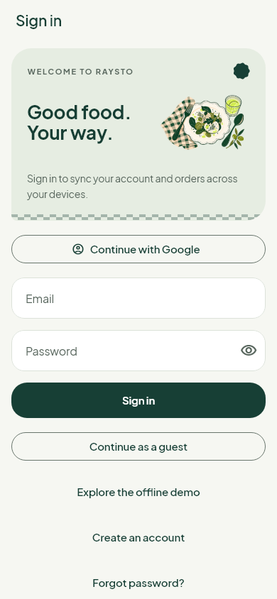
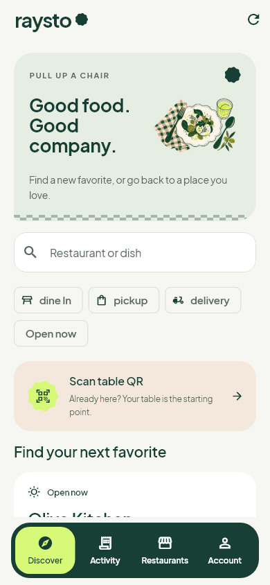
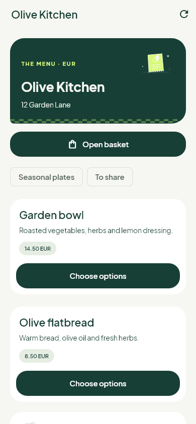
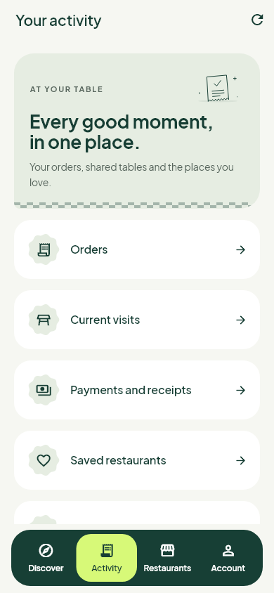
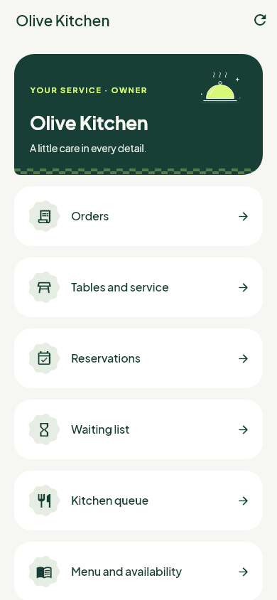
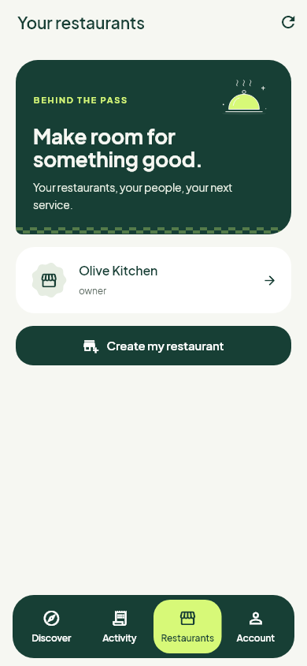
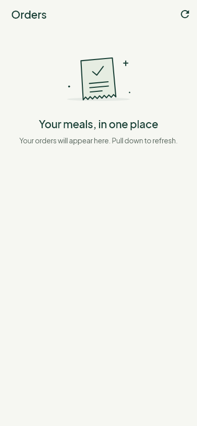
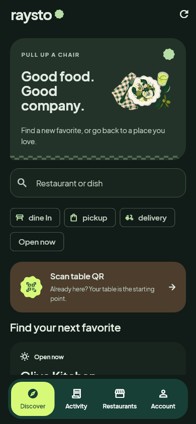
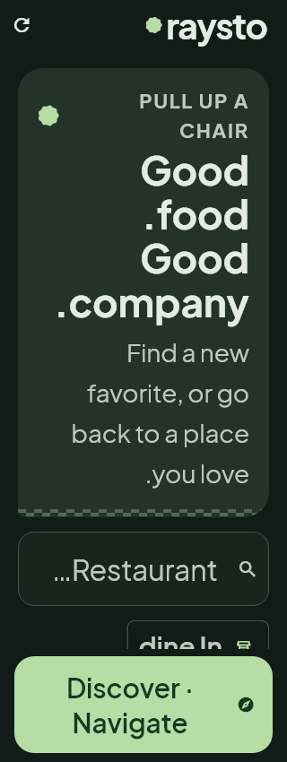

Raysto · A place at the table
Raysto · Mobile art direction · 0.10.0A place
at the table.
Paper, forest ink, a little lime. Original dining artwork and native vector motion bring the connected mobile experience into one warm, recognizable visual family.
Actual Flutter screen rendersThese previews use isolated restaurant fixtures. The APK connects to your existing backend; it does not add these sample restaurants. Still images show layout, not animation performance.

A warm welcomeAccount access stays direct and familiar.

Find your next favoriteIllustrated discovery, clear search and a table shortcut.

A menu with characterRoom for names, descriptions and authoritative prices.

Every good momentOrders, visits and receipts in one place.

Behind the passThe same identity follows restaurant teams.

Your restaurantsA calm starting point for the next service.

Thoughtful quiet momentsPurpose-specific illustrations and useful next-step copy.

After hoursSemantic dark surfaces and the same forest/lime identity.

Room to read320 px, 2× text and RTL layout stress check. Connected product copy remains English.